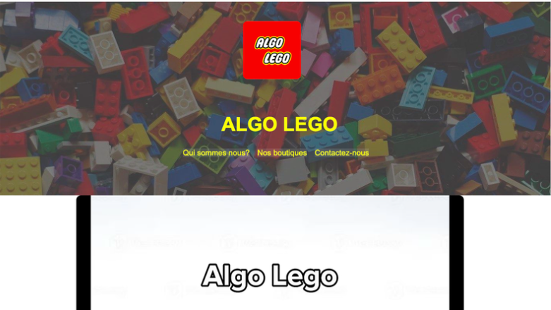
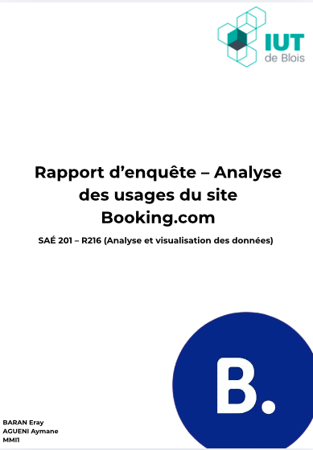
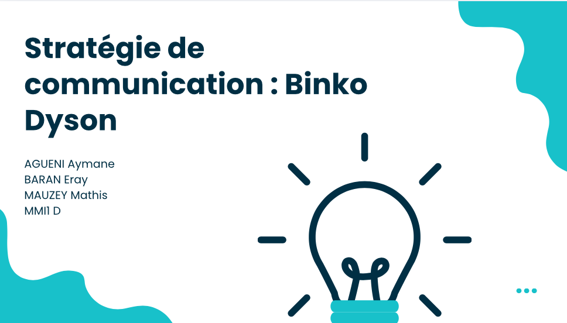
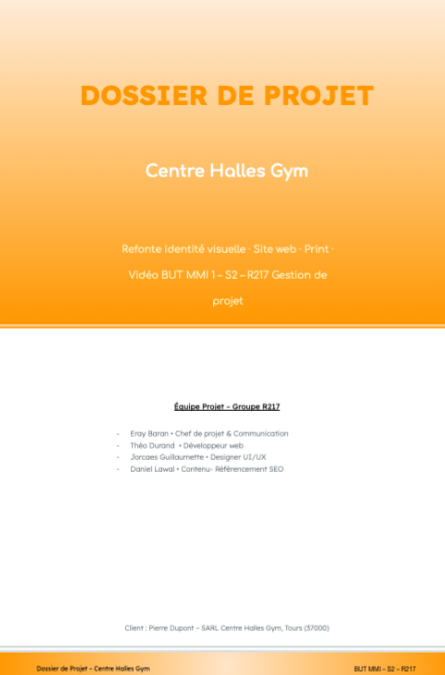
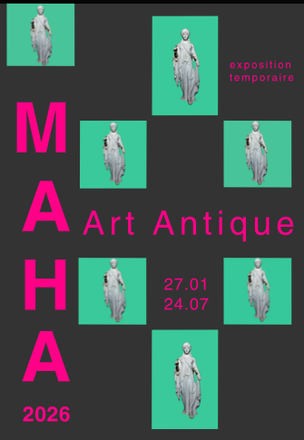

Développeur Web & Intégrateur
Étudiant en BUT Métiers du Multimédia et de l'Internet (MMI) à l'IUT de Blois.
Me contacterJ'ai 20 ans et je me suis lancé dans le développement web cette année pour découvrir progressivement le monde du web. Mon objectif est d'obtenir mon diplôme de BUT et d'accéder à un métier du web en continuant à apprendre et à pratiquer.
Grâce aux projets universitaires (SAE) et aux nombreux travaux de ma formation, j'apprends à gérer des projets de A à Z tout en expérimentant de manière autonome pour construire mes compétences pas à pas
IUT de Blois - Découverte du développement web, participation aux projets SAE, apprentissage pratique et autonome.
Théologie : une expérience personnelle enrichissante et une réelle ouverture culturelle.
Une expérience de transition qui m'a permis de mieux cerner mes intérêts réels et de me réorienter.
Spécialités SES, AMC (Anglais Monde Contemporain) et Mathématiques complémentaires.

Conception, réalisation et intégration d’un site web complet consacré à la découverte des algorithmes à travers l’utilisation de briques Lego. Participation à l’ensemble des étapes du projet, de la réflexion sur l’arborescence du site à la mise en ligne des contenus. Création de pages structurées et ergonomiques permettant de présenter les notions algorithmiques de manière ludique et accessible. Intégration des contenus textuels et visuels, mise en forme des pages à l’aide des technologies web, organisation de la navigation entre les différentes rubriques et adaptation de l’interface pour garantir une expérience utilisateur fluide. Travail sur la cohérence graphique, la lisibilité des informations et la hiérarchisation des contenus afin de faciliter la compréhension des concepts abordés. Le projet visait à rendre accessibles des notions d’algorithmique grâce à des exemples concrets réalisés avec des constructions Lego, tout en appliquant les bonnes pratiques de conception et de développement web.
Stack : HTML, CSS

Réalisation d'une étude ergonomique et d'utilisabilité du site Booking.com à travers un protocole de test utilisateur. Conception d'un questionnaire et définition de plusieurs scénarios de navigation permettant d'évaluer l'expérience utilisateur. Vingt participants ont été sollicités pour réaliser différentes tâches sur le site et répondre à des questions après chaque étape. Analyse des résultats recueillis afin d'identifier les points forts, les difficultés rencontrées par les utilisateurs et les pistes d'amélioration de l'interface.
Aptitudes : Analyse, Esprit critique

Élaboration d'une stratégie de communication numérique cohérente pour un produit fictif, avec ciblage et définition des messages.
Aptitudes : Réflexion stratégique, Analyse

Étude de l'existant et propositions d'améliorations stratégiques visant à moderniser la présence en ligne de la salle de sport, renforcer sa visibilité sur le web et améliorer l'acquisition ainsi que la fidélisation des adhérents.
Aptitudes : Analyse des besoins utilisateurs

Création d'un visuel clair et attractif pour une exposition temporaire d'art antique, respectant les codes de la communication visuelle.
Aptitudes : Composition graphique, Visuel
Intéressé par mon profil ou envie de collaborer ? N'hésite pas à me joindre directement.